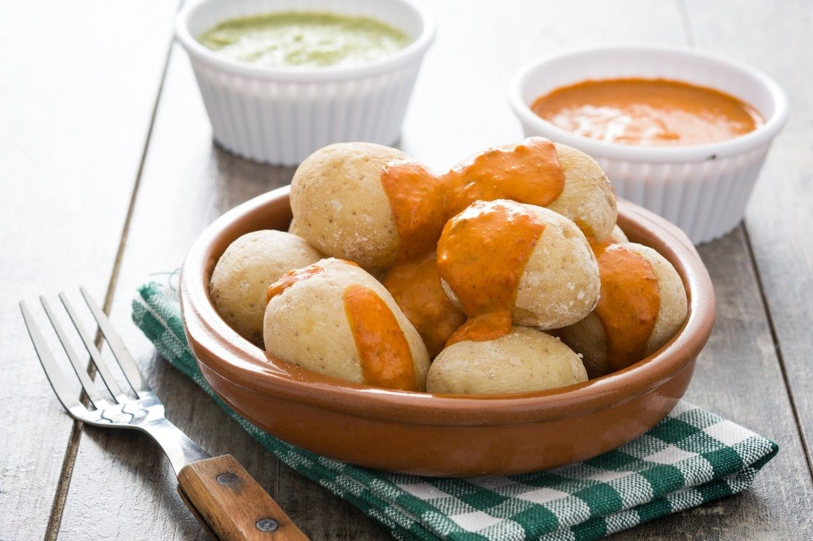

Inicio > Gastronomía
Gastronomía típica de Santa Cruz de Tenerife
La gastronomía tinerfeña es un reflejo de su historia y geografía, combinando productos del mar y de la tierra con influencias de la cocina latinoamericana y africana.
Platos principales (ordenados por popularidad)
- Papas arrugadas con mojo picón
- Conejo en salmorejo
- Ropa vieja canaria
Ingredientes típicos
- Plátano de Canarias
- Plátano en tempura
- Plátano asado con miel
- Gofio (harina de cereales tostados)
- Pescado fresco (cherne, vieja, sama)
Definiciones culinarias
- Mojo picón
- Salsa tradicional canaria elaborada con aceite de oliva, vinagre, ajo, pimentón y guindilla, que acompaña a las papas arrugadas y carnes.
- Gofio
- Harina obtenida de cereales tostados (trigo o millo) que se consume en múltiples preparaciones, desde desayunos hasta postres.
- Salmorejo canario
- Adobo típico para carnes de caza, especialmente conejo, elaborado con vino, ajo, pimentón y especias autóctonas.
Información nutricional de platos típicos
| Plato | Calorías (kcal) |
|---|---|
| Papas arrugadas con mojo | 320 |
| Conejo en salmorejo | 280 |
| Ropa vieja canaria | 350 |
| Gofio escaldado | 200 |
Imagen de un plato típico
